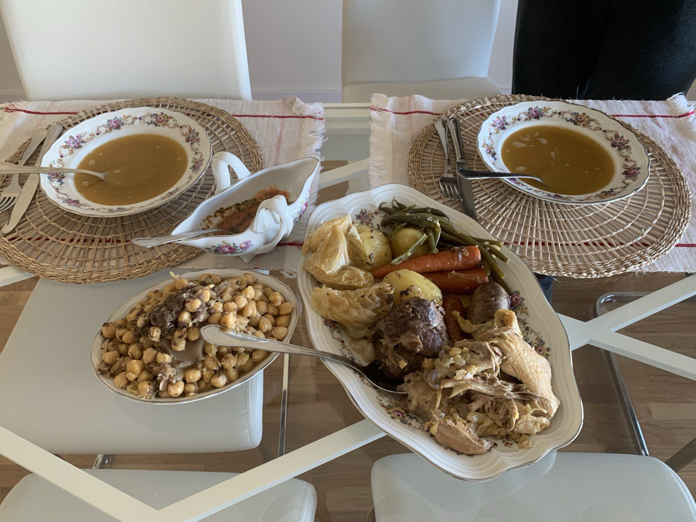

← Menú
Cocido madrileño
Ingredientes
140 g de garbanzos
Carnes (carnicería): ternera, pollo, tocino, hueso de caña
Embutido: chorizo, morcilla
Repollo
Judías verdes
Zanahorias
Patatas
Tomates
1 diente de ajo, comino, pimentón, orégano, pimienta, tomate pelado
Preparación
La noche de antes.
Poner los
garbanzos
en un bol con agua.
Olla a presión (1er vuelco).
Meter 2 vasos de
agua
,
sal
y las
carnes
(sin el embutido). Dejar 25 min a fuego medio.
Olla a presión (2º vuelco).
Meter los
garbanzos
y otros 25 min.
Olla a presión (3er vuelco).
Meter las
verduras y el embutido
y 10 min más.
Salsa para garbanzos.
Picar los
dientes de ajo
y echar en una tacita junto con el resto de especias de la lista.
